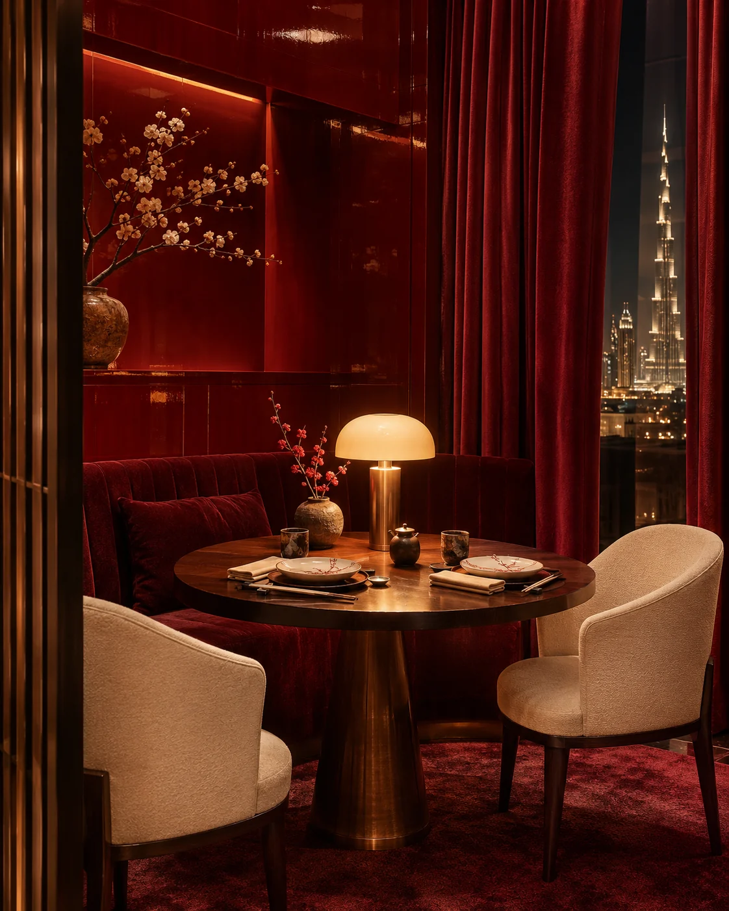
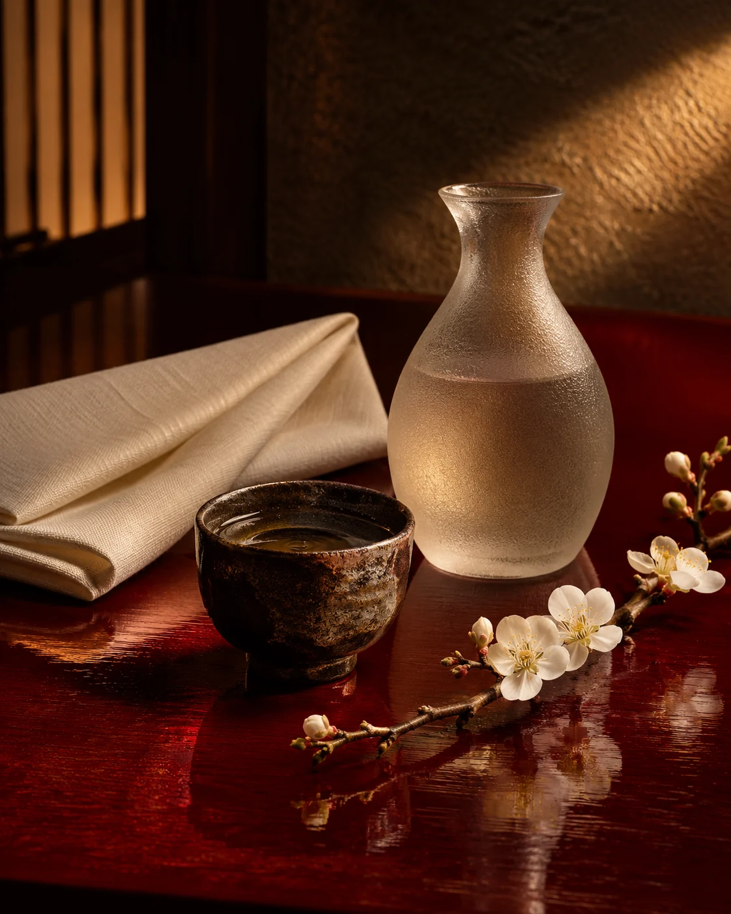

Privacy, with presence.
JIN’s private dining experience is imagined for guests who want the intimacy of the restaurant with a room held entirely for their company.
From a quiet dinner to a landmark celebration, the pace, menu, and service can be composed around the occasion.
Discuss your evening →
